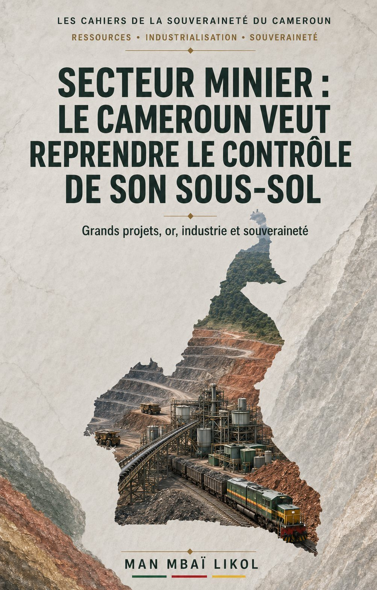

Secteur minier : le Cameroun veut reprendre le contrôle de son sous-sol
Entre démarrage de grands projets industriels, camerounisation des titres aurifères et durcissement des règles environnementales et fiscales, le gouvernement présente les contours d'une nouvelle politique minière.

L'enjeu dépasse l'ouverture de nouvelles mines : il s'agit de savoir si le Cameroun peut convertir ses richesses géologiques en capacités industrielles, en recettes publiques, en emplois qualifiés et en puissance nationale.
Le ministre des Mines, de l'Industrie et du Développement technologique par intérim, le professeur Fuh Calistus Gentry, et le ministre de la Communication, René Emmanuel Sadi, ont tenu à Yaoundé un point de presse conjoint consacré au « nouveau visage du secteur minier camerounais avec le démarrage des grands projets et la restructuration du secteur aurifère ».
Organisée à l'auditorium du ministère de la Communication, cette prise de parole gouvernementale avait pour objectif de présenter les avancées enregistrées dans le développement des grands projets miniers, mais surtout les mesures engagées pour reprendre le contrôle d'un secteur aurifère longtemps marqué par l'informel, la faible traçabilité des productions, les pertes fiscales et les dégâts environnementaux.
Au-delà des annonces techniques, ce point de presse pose une question fondamentale : le Cameroun est-il en train de transformer son potentiel géologique en véritable instrument de souveraineté économique ?
Cinq projets pour ouvrir une nouvelle séquence minière
Selon le MINMIDT, l'année 2025 a constitué un tournant historique avec le passage progressif du Cameroun du statut de pays disposant d'importantes réserves minières à celui de pays engagé dans la production industrielle. Cinq projets structurants ont été mis en avant :
- le projet d'exploitation du fer de Bipindi–Grand-Zambi ;
- le projet d'exploitation du fer de Kribi-Lobé ;
- le projet de bauxite de Minim-Martap, dans l'Adamaoua ;
- le projet d'exploitation industrielle du marbre de Bidzar ;
- le projet aurifère de Colomine.
Le gouvernement présente ces projets comme les premiers piliers d'un nouveau cycle minier camerounais. L'enjeu dépasse cependant la simple ouverture des mines. La mise en exploitation de ces gisements doit entraîner la construction d'infrastructures ferroviaires, portuaires, routières, énergétiques et industrielles capables de structurer durablement les territoires concernés.
Le fer de Bipindi–Grand-Zambi et celui de Kribi-Lobé peuvent renforcer le corridor industriel et portuaire du Sud. La bauxite de Minim-Martap peut contribuer à l'émergence d'une chaîne nationale de l'aluminium, à condition que le Cameroun ne se limite pas à l'exportation du minerai brut. Le marbre de Bidzar peut soutenir les industries nationales de construction et de transformation des matériaux. Quant à l'or de Colomine, il pose directement la question de la traçabilité, de la fiscalité et de la constitution éventuelle de réserves nationales.
L'or, symbole des faiblesses de l'ancien modèle
La restructuration du secteur aurifère constitue l'autre grand axe de la communication gouvernementale. Pendant de nombreuses années, une partie importante de l'exploitation artisanale semi-mécanisée s'est développée dans un environnement insuffisamment contrôlé : titres prêtés ou dissimulés derrière des prête-noms, productions sous-déclarées, or écoulé par des circuits informels, sites abandonnés sans réhabilitation et recettes publiques inférieures au potentiel réel du secteur.
La réforme présentée par le MINMIDT vise donc à rétablir l'autorité de l'État sur l'ensemble de la chaîne : attribution des autorisations, identification des propriétaires, contrôle de la production, paiement des taxes, traitement du minerai et restauration des sites.
Une caution environnementale de 63 millions de FCFA
Le premier verrou concerne la protection de l'environnement. Chaque site d'exploitation artisanale semi-mécanisée devra désormais être couvert par une caution environnementale annoncée à 63 millions de FCFA. Cette somme doit servir de garantie pour la restauration et la réhabilitation des espaces dégradés.
Cette obligation répond à une réalité longtemps négligée : une mine ne produit pas seulement des recettes et des minerais. Elle peut également laisser derrière elle des terres inutilisables, des cours d'eau pollués, des excavations dangereuses et des communautés privées de leurs moyens traditionnels de subsistance.
La souveraineté ne consiste donc pas uniquement à extraire une ressource nationale. Elle suppose aussi de ne pas sacrifier durablement le territoire national pour un bénéfice économique immédiat.
Au moins 51 % du capital détenu par des Camerounais
La deuxième mesure concerne ce que le gouvernement qualifie de « nationalisation des titres ». Sur le plan juridique et économique, il serait cependant plus précis de parler de camerounisation du capital. Pour obtenir une autorisation d'exploitation artisanale semi-mécanisée, une entreprise devra être détenue à au moins 51 % par un ou plusieurs Camerounais.
La mesure vise à empêcher que des opérateurs étrangers contrôlent indirectement les autorisations réservées aux nationaux à travers des montages de façade. Mais son efficacité dépendra de la capacité de l'administration à identifier les bénéficiaires réels des sociétés.
Une participation camerounaise inscrite sur des documents ne suffit pas si les financements, les décisions, les équipements, la commercialisation et les bénéfices restent intégralement contrôlés depuis l'étranger. La souveraineté exige des actionnaires camerounais réels, disposant d'un pouvoir économique effectif et non de simples prête-noms administratifs.
Fiscalité et seuils minimaux de production
Le nouveau dispositif prévoit une fiscalité présentée comme intangible :
- 25 % au titre de l'impôt synthétique minier libératoire ;
- 5 % pour les droits de sortie ;
- 1 % destiné aux fonds de mise en œuvre de la politique minière.
Des seuils mensuels minimaux de production sont par ailleurs annoncés :
- 5 kilogrammes d'or pour un site équipé de 15 bôles ;
- 7 kilogrammes pour 20 bôles ;
- 10 kilogrammes pour 30 bôles.
Ces seuils doivent permettre à l'État de comparer les capacités installées avec les quantités officiellement déclarées. Ils constituent ainsi un outil de lutte contre la sous-déclaration et la sortie clandestine de l'or.
Mais le contrôle devra aller plus loin : pesée certifiée, numérotation des productions, registre numérique, géolocalisation des sites, identification des acheteurs, contrôle des exportations et rapprochement régulier entre production déclarée, taxes payées et volumes commercialisés.
Car un État qui ignore précisément la quantité d'or extraite de son territoire ne peut pas prétendre exercer pleinement sa souveraineté minière.
La technologie au service du contrôle et de l'environnement
Les opérateurs disposent également d'un délai de six mois pour migrer vers des systèmes de traitement du gravier minéralisé en vase clos, notamment par lixiviation contrôlée.
L'objectif annoncé est de limiter les rejets incontrôlés, d'améliorer la récupération du minerai et de mieux encadrer l'utilisation des substances chimiques. Cette modernisation doit s'accompagner d'inspections régulières, de mécanismes de traçabilité et de sanctions effectives.
La technologie ne doit cependant pas devenir un simple critère administratif. Elle doit contribuer à réduire les pertes de minerai, protéger les travailleurs, limiter la contamination des sols et des eaux et rendre la production plus facilement vérifiable par les services de l'État.
La mine ne devient souveraine que lorsqu'elle développe le pays
L'ouverture de grands projets et le durcissement des règles constituent une avancée, mais ils ne suffisent pas encore à définir une politique minière souveraine.
Un pays peut extraire beaucoup de minerai tout en restant économiquement dépendant. C'est notamment le cas lorsque les matières premières sont exportées sans transformation, que les équipements sont entièrement importés, que les financements viennent exclusivement de l'extérieur et que l'essentiel des bénéfices quitte le territoire.
La souveraineté minière devra donc être évaluée à travers plusieurs résultats concrets :
- la part du minerai transformée localement ;
- les emplois qualifiés créés pour les Camerounais ;
- les entreprises nationales intégrées dans la sous-traitance ;
- les infrastructures construites et partagées avec les territoires ;
- les recettes effectivement versées à l'État et aux collectivités ;
- la participation réelle des nationaux au capital ;
- le transfert de technologies et de compétences ;
- la protection des communautés riveraines ;
- la restauration effective des sites exploités ;
- la capacité du Cameroun à connaître, certifier et commercialiser ses propres ressources.
Le véritable combat pour la souveraineté ne consiste donc pas à fermer le secteur aux capitaux étrangers. Il consiste à imposer aux investissements une architecture compatible avec les intérêts stratégiques du Cameroun.
Du sous-sol à la puissance nationale
Le point de presse conjoint MINMIDT–MINCOM révèle une volonté de changement : passage à l'exploitation industrielle, contrôle accru de l'or, camerounisation des autorisations, renforcement de la fiscalité et responsabilisation environnementale des opérateurs.
Cette orientation mérite d'être soutenue, mais également surveillée. Car les textes les plus ambitieux ne produisent de souveraineté que lorsqu'ils sont appliqués de manière transparente et constante.
Le Cameroun ne doit plus être seulement le propriétaire juridique de son sous-sol. Il doit devenir le maître de la connaissance géologique, de l'attribution des titres, du contrôle de la production, de la transformation industrielle et de l'affectation des revenus.
La mine camerounaise ne sera véritablement souveraine que lorsque chaque tonne de fer, de bauxite ou de marbre, et chaque kilogramme d'or extrait, contribuera à construire des infrastructures, financer l'État, développer les compétences nationales et préparer l'avenir industriel du pays.
SOURCES PRINCIPALES
- MINMIDT — Point de presse conjoint MINMIDT–MINCOM
- Loi n° 2023/014 du 19 décembre 2023 portant Code minier
- Décret n° 2024/05062/PM du 18 novembre 2024